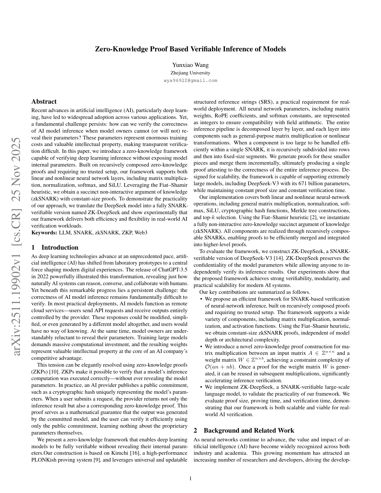
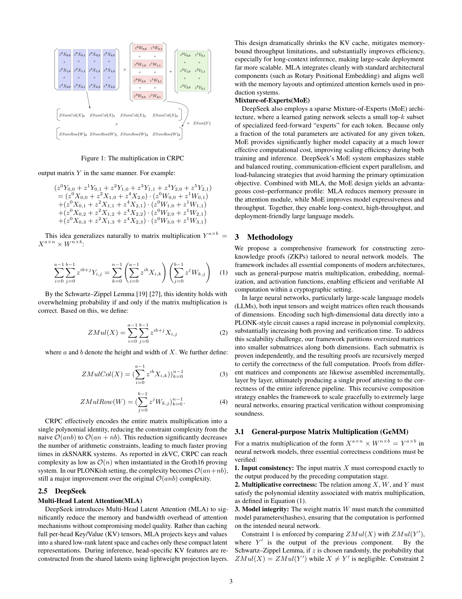
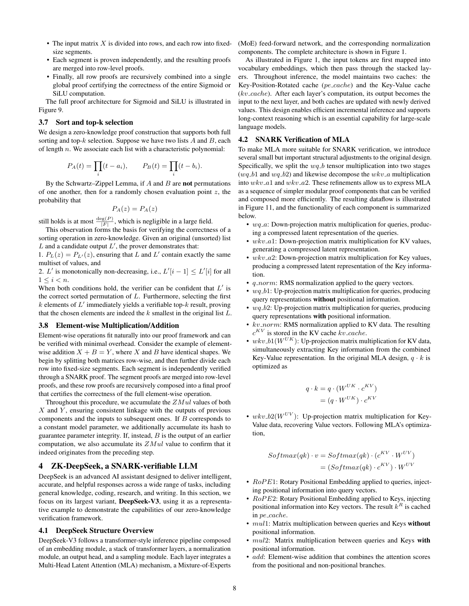

1. 研究動機
超大規模 LLM 的驗證需求
隨著 DeepSeek-V3 等 671B 參數模型的出現，如何驗證這些超大規模模型的推理正確性成為新挑戰。ZK-DeepSeek 是首個支援此規模模型的零知識驗證框架。
核心問題
現有 ZKML 框架（如 zkLLM）最大支援 13B 參數。DeepSeek 的 MoE（混合專家）架構和 MLA（多頭潛在注意力）機制帶來全新的技術挑戰。
DeepSeek 架構的特殊性
MLA (Multi-head Latent Attention)
DeepSeek 引入 MLA 大幅降低 KV Cache 的記憶體佔用。與標準 Attention 不同，MLA 將 Key/Value 投影到低維潛在空間，再重建特徵。
MoE (Mixture of Experts)
採用稀疏 MoE 架構，671B 參數中只有小部分「專家」被激活。這需要驗證路由機制（gating）和專家選擇的正確性。

2. CRPC：通用降維多項式電路
核心創新
CRPC (Common Reduced Polynomial Circuits) 是 ZK-DeepSeek 的核心技術創新，專門針對神經網路中的矩陣乘法設計。
關鍵洞察
神經網路中的矩陣乘法可以轉換為單一多項式恆等式，將約束複雜度從 O(anb) 降低到 O(an + nb)，實現數量級的效率提升。
CRPC 的數學基礎
矩陣乘法 \(Y^{a \times b} = X^{a \times n} \times W^{n \times b}\) 的 ZK 驗證傳統上需要 \(O(anb)\) 個約束。CRPC 透過定義輔助函數：
並利用 Schwartz-Zippel 引理，將整個矩陣乘法壓縮為單一多項式驗證。

與 zkLLM tlookup 的比較
| 特性 | zkLLM (tlookup) | ZK-DeepSeek (CRPC) |
|---|---|---|
| 複雜度 | O(n + m) | O(an + nb) |
| 主要優化目標 | 查表操作 | 矩陣乘法 |
| MoE 支援 | 無 | 原生支援 |
| 最大模型 | 13B | 671B |
3. GeMM：通用矩陣乘法驗證
三大正確性條件
對於矩陣乘法 \(X^{a \times n} \times W^{n \times b} = Y^{a \times b}\)，GeMM 驗證三個條件：
- 輸入一致性：輸入矩陣 X 必須與前一計算階段的輸出完全一致
- 乘法正確性：X、W、Y 之間的關係必須滿足矩陣乘法的多項式恆等式
- 模型完整性：權重矩陣 W 必須與承諾的模型參數匹配
承諾機制
使用 ZMul 函數對 X 與 ZMul(Y') 進行承諾比對，其中 Y' 是前一階段的輸出。若 z 隨機選取，則不匹配的機率可忽略。
遞迴證明組合
ZK-DeepSeek 採用遞迴證明組合策略：
- 將神經網路按層分解為子矩陣
- 每個子矩陣獨立證明
- 證明結果遞迴合併，最終產生單一證明
這使框架能夠優雅地擴展到任意大小的神經網路。
4. DeepSeek 架構支援
MLA (Multi-head Latent Attention)
DeepSeek 的 MLA 機制將傳統 Attention 的 KV Cache 壓縮到低維潛在空間：
標準 Attention
每個 head 儲存完整的 K, V 張量，記憶體隨序列長度線性增長。
MLA
將 K, V 投影到共享的低維空間，推理時透過輕量投影層重建，大幅降低記憶體需求。
ZK-DeepSeek 針對 MLA 設計專用驗證電路，支援：
proj(K)：Key 投影驗證proj(V)：Value 投影驗證recon(K)：Key 重建驗證recon(V)：Value 重建驗證
MoE (Mixture of Experts)

MoE 架構的驗證挑戰：
- 路由機制：驗證 Top-K 專家選擇的正確性
- 專家計算：只驗證被激活的專家（稀疏性利用）
- 組合輸出：驗證專家輸出的加權組合
Softmax 與 RoPE 支援
Softmax
使用定點數近似和查表技術處理指數運算，將輸入範圍分段，透過預計算表格實現高效驗證。
RoPE (Rotary Positional Embedding)
預計算 sin/cos 值並儲存為權重矩陣，證明者只需執行算術運算並驗證與哈希的一致性。
5. 實驗結果
支援模型規模
框架比較
| 框架 | 最大模型 | MoE 支援 | MLA 支援 | 核心技術 |
|---|---|---|---|---|
| EZKL | ~100M | 否 | 否 | Halo2 電路 |
| zkLLM | 13B | 否 | 否 | tlookup + zkAttn |
| ZK-DeepSeek | 671B | 是 | 是 | CRPC + GeMM |
關鍵技術貢獻
規模突破
ZK-DeepSeek 將可驗證 LLM 的規模從 13B 提升到 671B，實現約 50 倍的擴展，首次使超大規模 MoE 模型的零知識驗證成為可能。
6. 結論與影響
主要貢獻
- CRPC：通用降維多項式電路，將矩陣乘法約束從 O(anb) 降至 O(an+nb)
- GeMM 驗證：通用矩陣乘法的三階段正確性驗證協議
- DeepSeek 原生支援：首個支援 MLA 和 MoE 架構的 ZKML 框架
- 規模突破：將可驗證 LLM 規模擴展到 671B 參數
應用場景
企業級 AI 驗證
企業可驗證雲端 AI 服務商是否真正使用聲稱的超大規模模型，保障服務品質。
可審計 AI 決策
在金融、醫療等高風險領域，提供 AI 決策的可驗證性，滿足監管要求。
技術限制
當前限制
- 證明時間：超大規模模型的證明生成仍需較長時間
- 硬體需求：完整驗證需要高端硬體配置
- 精度權衡：量化可能影響某些任務的精度
ZKML 發展脈絡
ZK-DeepSeek 代表 ZKML 領域的最新進展：
- 2021 - zkCNN：首個 CNN 驗證系統
- 2024 - ZKML (EuroSys)：系統化配置優化
- 2024 - zkLLM (CCS)：首次支援 13B LLM
- 2025 - ZKLoRA：高效 LoRA 驗證
- 2025 - ZK-DeepSeek：突破至 671B MoE 模型